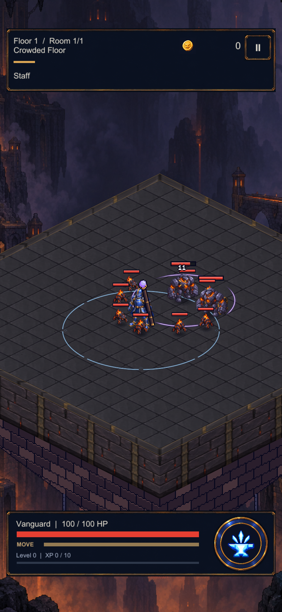
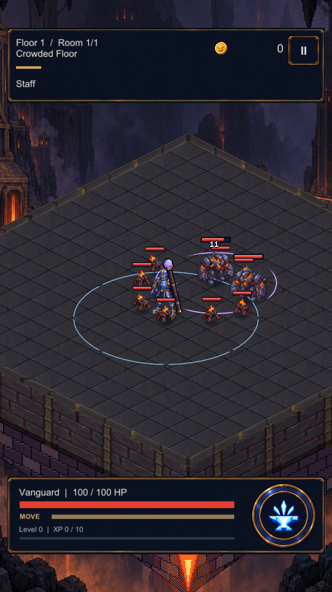

Staff darbesi · oyuna entegrasyon
Hedefin ayaklarında genişleyen dört mor-beyaz yay. Gerçek otomatik saldırıdan alınan Unity kareleri; efekt 0,21 saniyede söner. Küçük darbe tüm hasar alanının sınırı değildir.
Telefondaki gerçek kayıt
S23 üzerinde kuruldu ve kontrol edildi. Test sonunda Daggers seçildi; normal oyun açık.
Unity kareleri

1080 × 2340 · gerçek saldırı
1080 × 1920 · aynı efektDoğrulama ve cihaz kaydı · Önceki karşılaştırma